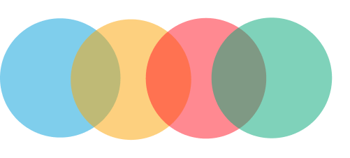

Hello again! Now that you’ve made it this far. I would like to tell you more about myself!
I Graduated high school 🎓 in 2016 and then began my journey studying physics 🧪 at UQ in 2017. During my studies I started working as a radio operator at Suncorp Stadium where I communicated information across radio channels.
Fast forward to 2018 when I underwent my first programming course - CSSE1001. This is where I learned python my first programming language.
 After a financially tough year 😒. I left University to pursue a huge hobby of mine...
I began working with my partner as a cook 🍳 at Rashays.
After a few years of practice I became a kitchen manager 👨🍳 where I had a lot of fun but felt like I was missing something.
That is when in late 2021 amidst covid lock downs I decided I was going to undertake Harvards CS50 where I learnt the programming language . Which leads me to now:
I am a "code-newbie" studying web development at Coder Academy and am looking forward to making some smashing websites.